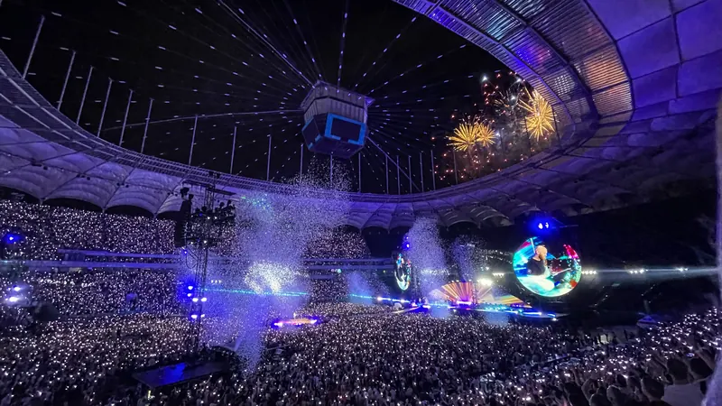

Pop
Coldplay · Music of the Spheres
Diez noches consecutivas en el Monumental, un récord para un artista en ese estadio, con pulseras luminosas, fuegos artificiales y papel picado.
“Es el mejor martes de mi vida”
— Chris Martin, en la primera noche (25/10/2022)